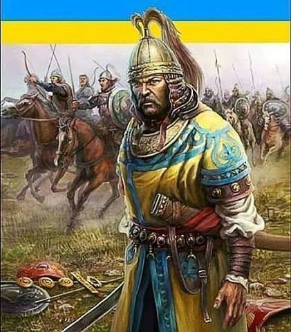

15:36 05.04.2022 р.
Історичне поняття "хохол" - з тюркського "син божий", тобто степовик-християнин часів Орди, а виглядав "хохол" саме так. І ще один переклад з тюркського - "син сонця". Існує й інша версія, по ній назву отримали древні русичі від монголів за жовто-блакитні прапори.
"Хохол" - походить від татарського “хох оллу” — “блакитножовтий”, або за іншою версією - “хох оллу” можна тлумачити і як “син неба”. Ще існує і такий варіант: “хохол — коколь" (від тібетського походження), означає: вінець, корона, навершя”.

У липні 971 року великий князь Русі Святослав та візантійський імператор Цимісхій зустрілися на березі Дунаю. З ними був Історик Лев Диякон Калойський, і залишив такий портрет київського князя Святослава. Був він: "Помірного зросту, не дуже високого і не дуже низького, з кошлатими бровами та світло-синіми очима, кирпатий, і без бороди, з густим надмірно довгим волоссям над верхньою губою (вусами).
Голова в нього була зовсім гола, але з одного її боку звисало пасмо волосся — ознака знатності роду (оселедець). Міцна потилиця, широкі груди і інші частини тіла цілком пропорційні. Виглядав він досить суворим і диким. В одне вухо в нього було протягнуто золоту сережку, що прикрашена золотим карбункулом, і ще обрамленим двома перлинами. Одяг його був білий і відрізнявся від одягу інших воїнів лише чистотою”.
Оселедець, як ознаку знатності роду, носив не лише Святослав. “На старовинних книжкових мініатюрах і фресках зустрічається зачіска, яка нагадує український оселедець. Це довге пасмо волосся, що звисає з одного боку. Можливо, це була зачіска князів”. У IX ст., династія Каролінгів - франкські воїни носили зачіску, що нагадувала український оселедець.
Треба тут сказати, що в середньовічній Європі християнська церква виступала проти звичаю “вирощувати на обличчі щетину”. Як бачимо з опису вигляду князя Святослава, він не носив бороди. Не носили бороди ні Хмельницький, ні Мазепа, ні інші гетьмани. Взагалі, українські селяни, як і польські, німецькі, французькі і т. д., на відміну від російських, не носили бороди...
Дотримуючись княжої військової традиції, запорожці, так само як Святослав, голили голову і бороду, залишаючи вуса і чуприну.
Як розповідали Д. Яворницькому старі люди, які пам’ятали козаків: “дівчата коси кохають, а запорожці чуприни”.
”. На підставі численних зображень та величезної кількості описів, докладно відомо, як виглядав знак воїна — оселедець (козацька чуприна): “Вся голова голилась чи стриглась при тілі, над самим же лобом зіставалося кругле пасмо волосся пальців у три ширини. Волосся те часом відростало у довгу косу, котру можна було, зачесавши на лівий бік, або обнести кругом і замотати за ліве ухо, або просто довести до нього і замотати. Частіше, коли вона була не дуже довга, тільки спускалась за вухо, і її кінець теліпався на плечі. Така коса надавала лицю дуже войовничий вид і оригінальну красу”.
P.S. Ми - "Сини/доньки короновані Небом"